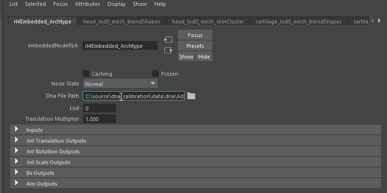

Frequently Asked Questions (FAQ)
Fix “RuntimeError: Error loading DNA: DNA signature mismatched, expected DNA, got ver?”
In order to fix this issue, you should install git-lfs, and clone the repository again. DNA files will be downloaded correctly then. If you cannot install git-lfs, you can download DNA files manually.
How do I distribute a Maya scene?
Your scene should work out of the box if you include the following in the distribution:
Scene file (
.mbfile)DNA (
.dnafile)Workspace (
workspace.melfile)
All of these files need to be distributed together. If those files are not bundled and you experience some issues with you rig in Maya, try the following steps:
How do I open a generated scene?
Before you load a generated scene, follow these steps:
From the main menu, go to File > Set Project.
Select
workspace.melSet the containing folder (with generated maya scene,
.dnafile andworkspace.mel).
How do I change the DNA path in the Maya scene?
If you want to change the DNA path in the scene:
In
outliner, deselect DAG Objects Only:Still in the Outliner, search for
rl4. You will see a file whose name starts withrl4Embedded_. Click this file to select it.In
Attribute editoryou will be able to change the path withDna File Path: